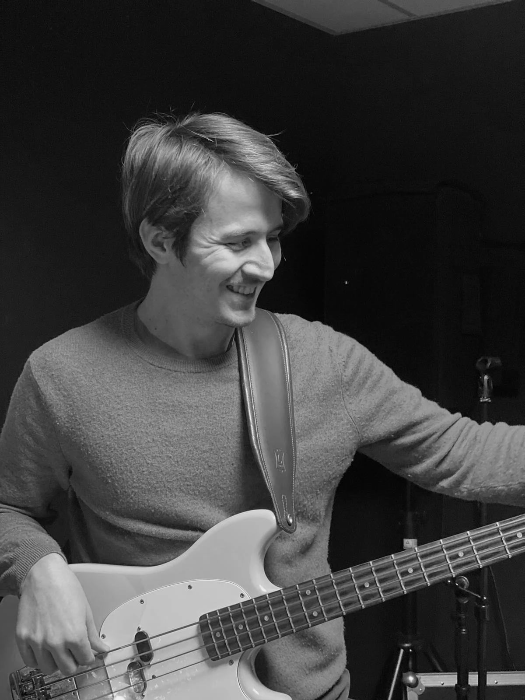

Papaya Jazz
Une nouvelle expérience
Trio Basse, Batterie, Piano Papaya Jazz vous propose un set reprise & composition aux influences Fusion -Jazz -Bossa
Une créativité débordante
Modulable, nous vous proposerons le live qui correspondra à l'ambiance que VOUS souhaitez pour votre évènement.
Membres du groupe
ü•Å Batterie
Gianni
üéπ Clavier
Matteo

üé∏ Basse